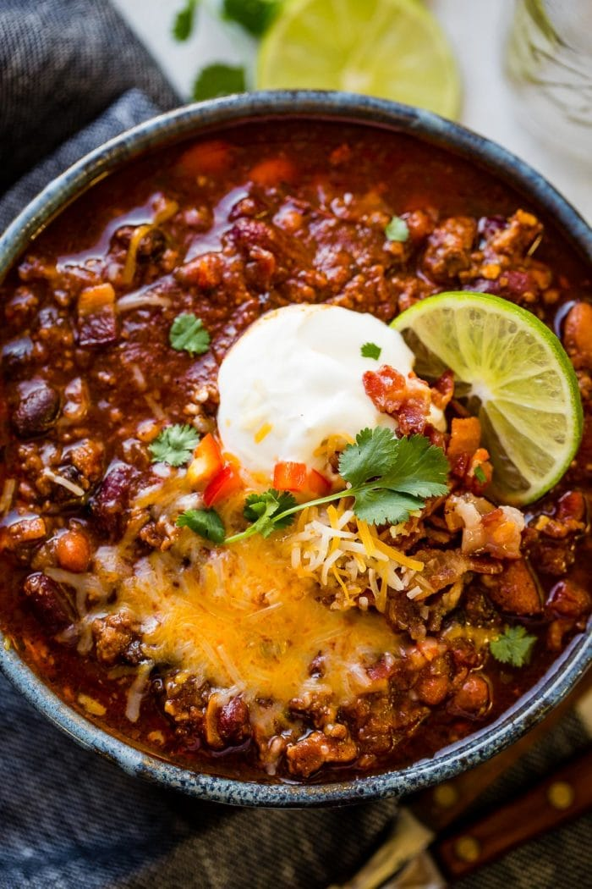

Instant Pot Chili

Description
A quick to make atery blaster of a chili! Just make sure you don't eat this every single day. Although, you might have a hard time doing that... Most you'll have to do is cooking the ground beef, after that you sit and wait for your delicious chili to finish cooking!
Ingredients
- 1 1/2 Pounds Ground Beef
- 1 Can Kidney Beans 15 ounces, drained
- 1 Can Pinto Beans 15 ounces, drained
- 1 Can Black beans 15 ounces, drained
- 1 Can Fire Roasted Diced tomatoes 15 ounces, with juice
- 2 Cups Beef Stock
- 1 Red Onion chopped
- 1 Red Bell Pepper seeded and chopped
- 1 Tablespoon Dried Oregano
- 2 Teaspoons Ground Cumin
- 2 Teaspoons Kosher Salt
- 1 Teaspoon Ground Black Pepper
- 1 Teaspoon Smoked Paprika
- 2 Tablespoons Chili Powder
- 1 Tablespoon Worcestershire Sauce
Steps
- Add the onions and peppers and cook until tender.
- Add the meat and cook until browned.
- Drain off any excess grease, we just tilt the pot and use a large spoon.
- Add all of the remaining ingredients and 3/4 of the bacon and stir to combine.
- Turn the instant pot to chili (if you don't have a "chili" setting, use the "manual" setting) and cook for 18-20 minutes*. Allow pressure to release for 10-15 minutes or quick release with the vent.
- Serve with limes, sour cream, cheese, and a little bacon!